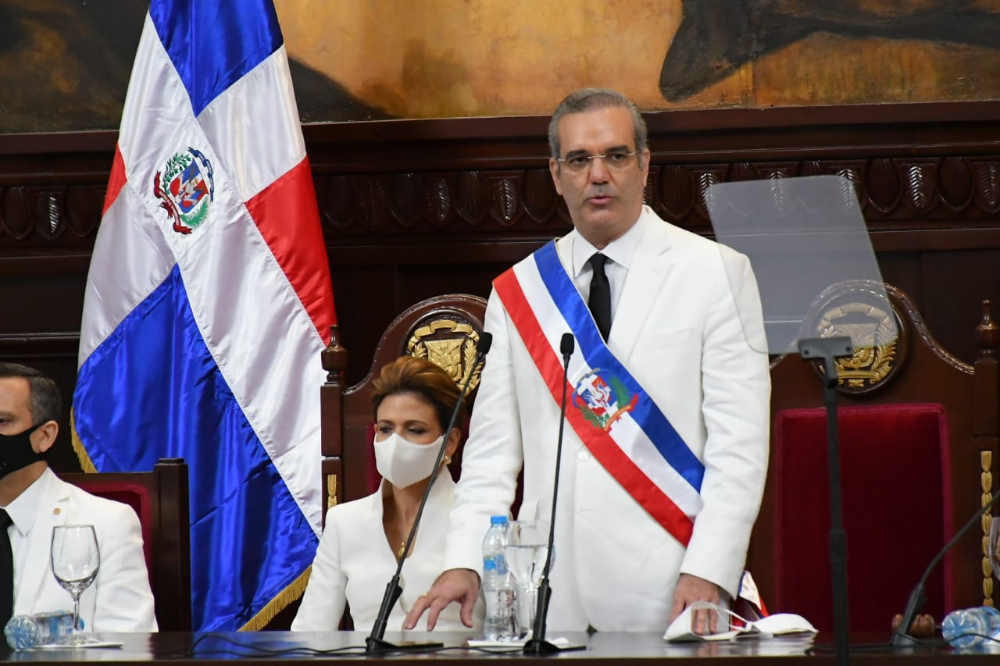

República Dominicana é um país centro-americano localizado na ilha de São Domingos, ou ilha Hispaniola, a leste do Haiti. Banhado pelo mar do Caribe, o território dominicano apresenta clima tropical com relevo predominantemente montanhoso, coberto pela vegetação florestal nativa e pelas pastagens e áreas agrícolas. Vivem na República Dominicana quase 11 milhões de pessoas, concentrando-se especialmente em cidades como São Domingos, a capital do país. Em função de suas paisagens naturais e da riqueza cultural, a República Dominicana é hoje um dos principais destinos turísticos do Caribe.
A era de vendas e marketing digital está se tornando cada vez mais forte na República Dominicana. Nos últimos anos, tem havido um aumento significativo no número de empresas que adotam estratégias de marketing digital para promover seus produtos ou serviços online. Além disso, o acesso à internet está se expandindo rapidamente na República Dominicana, o que está permitindo que mais pessoas se conectem e interajam com as empresas por meio de canais digitais.
Os profissionais de marketing estão investindo em estratégias de SEO, publicidade online, marketing de mídia social, e-mail marketing, entre outras, para alcançar um público mais amplo e aumentar suas vendas. Além disso, muitas empresas estão começando a adotar o e-commerce como uma forma adicional de venda, o que permite que elas alcancem clientes em todo o país.
No entanto, apesar do crescimento do marketing digital na República Dominicana, ainda há um longo caminho a percorrer. Muitas empresas ainda estão aprendendo a aproveitar ao máximo as ferramentas e estratégias disponíveis e estão enfrentando desafios como a falta de recursos e conhecimento especializado.
No geral, a era de vendas e marketing digital está se fortalecendo na República Dominicana, e espera-se que continue crescendo nos próximos anos à medida que mais empresas reconheçam o potencial do marketing digital para impulsionar suas vendas e expandir seu alcance.
Não é possível determinar com certeza se a era de vendas e marketing digital é mais forte na República Dominicana em comparação com o Brasil. Ambos os países têm uma presença significativa de empresas e profissionais que utilizam estratégias digitais de vendas e marketing. A força dessas práticas pode variar dependendo de vários fatores, como o desenvolvimento da infraestrutura de internet, a penetração do acesso à internet e a cultura empresarial. É necessário um estudo mais aprofundado para fazer uma comparação precisa entre os dois países.
As mudanças mais significativas ocorreram no sistema de propriedade da terra, aspecto de importância vital para os interesses norte-americanos no país. A intervenção ocorreu durante a Primeira Guerra Mundial (1914 a 1918), que havia afastado da produção os principais países açucareiros. Os Estados Unidos necessitavam de novos mercados abastecedores, e a República Dominicana, que desde o final do século XIX passava por um processo ascendente de desenvolvimento açucareiro, preenche esse papel. No entanto, para aumentar a produção e a rentabilidade, certos entraves deveriam ser superados. Um deles era a ausência de estradas. Outra dificuldade era a existência de um esquema de posse de terra com base nos Terrenos Comunais, compartilhados por vários donos, e na pequena propriedade agrícola. Para enfrentar essa situação, estabeleceu-se o chamado Sistema Torrens, mediante o qual foi ordenada a partilha dos Terrenos Comunais, com regulamentações para a medição e a divisão dos terrenos. Além disso, foi promulgada uma lei de impostos sobre a propriedade. Os Estados Unidos, por sua vez, deram um tratamento preferencial ao açúcar dominicano.
Com todas essas medidas e a entrada em larga escala de capitais, a indústria açucareira duplicou sua produção e se tornou um fator determinante do desenvolvimento capitalista dominicano. Devido aos excelentes preços internacionais do açúcar e às grandes riquezas acumuladas, esse período ficou conhecido como o da “Dança dos milhões”. A fabricação do açúcar foi monopolizada por empresas estrangeiras em detrimento dos produtores nacionais. As disposições em torno da propriedade do solo fizeram com que muitos camponeses perdessem terras, pois não podiam arcar com os impostos e o pagamento de agrimensores para a medição e a separação de seus terrenos, além do que se tornaram comuns as falsificações de títulos de propriedade. Dessa forma, facilitou-se a formação dos latifúndios açucareiros que ocupariam o leste do país. Não por acaso ali surgiu a principal força de resistência armada à intervenção.
O governo da República Dominicana é essencialmente civil, republicano, democrático e representativo. Está dividido em poder legislativo, poder executivo e poder judicial, independentes no exercício das suas respectivas funções, determinadas pela Constituição. O Poder Legislativo é desempenhado no âmbito do Congresso Nacional, composto pelo Senado e pela Câmara dos Deputados, cada qual com, respectivamente, 32 e 190 assentos."
A República Dominicana realiza eleições políticas a cada quatro anos, para escolher o Presidente, Legisladores e Prefeitos (eleições presidenciais, congressuais e municipais). O Presidente da República é o Licenciado Luís Rodolfo Abinader Corona , a Vice-presidente é a Licda. Raquel Peña, eleitos para o período 2020-2024.
A República Dominicana está dividida em trinta e duas províncias e um Distrito Nacional que é a capital, chamada Santo Domingo de Guzmán. As províncias são: Azua, Bahoruco, Barahona, Dajabón, Duarte, Elías Piña, El Seibo, Espaillat, Hato Mayor, Independencia, La Altagracia, La Romana, La Vega, María Trinidad Sánchez, Monseñor Nouel, Monte Cristi, Monte Plata, Pedernales, Peravia, Puerto Plata, Salcedo, Samaná, San Cristóbal, San José de Ocoa, San Juan, San Pedro de Macorís, Sánchez Ramírez, Santiago, Santiago Rodríguez, Santo Domingo Este, Santo Domingo Norte y Santo Domingo Oeste.
Inaugurado em 16 de agosto de 1947, o Palácio Nacional é a sede do governo dominicano. Representa o símbolo da soberania dominicana e é palco de importantes tomadas de decisão para o desenvolvimento do país.